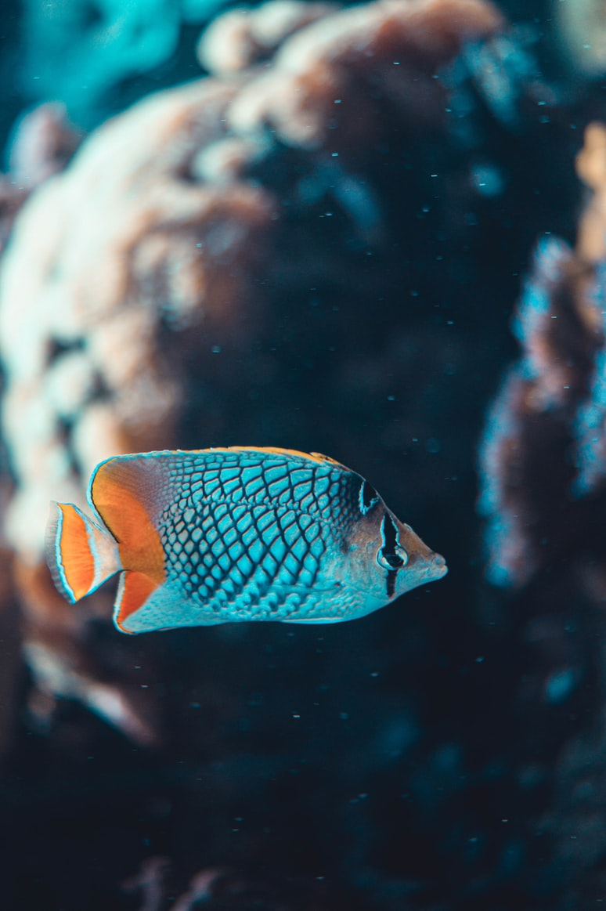

 Su tamaño es variable y según algunas fuentes consultadas, no sobrepasa los 15 centímetros en acuario, mientras que es posible encontrar ejemplares en libertad de 20 o 30 centímetros. La morfología de este pez es muy singular y su nombre lo indica (pez Disco), son redondeados y aplanados por sus laterales. Sus aletas dorsal y anal, comienzan casi en la cabeza, para recorrer todo el cuerpo y llegar a la cola, que posee una forma triangular, que le permite realizar desplazamientos con gran rapidez. No existe un dimorfismo sexual evidente, aunque en época de reproducción, la papila genital de los machos adquiere una forma puntiaguda. La coloración es diversa. Encontramos ejemplares que van desde el verde, pasando por el estriado azul-rojo, hasta llegar al marrón. Recientemente, se ha descubierto una variedad ocre, en algunos de los afluentes del Amazonas. Lo que si es muy característico, son sus bandas negras que recorren todo su cuerpo en sentido vertical, que no se muestra idéntica en todas las coloraciones. Mientras que la variedad turquesa, muestra trazos cortos y discontinuos de color azul intenso, en la variedad azul real, estos trazos son continuos. Estas diferencias en las bandas, las podemos apreciar en todas las coloraciones.
Son peces originarios de la selva amazónica. Su distribución geográfica se extiende desde Manaos a Iquitos, en los ríos Amazonas, Putamayo, Tocantins, con poblaciones en Guyana y Suriname. Su hábitat natural no está en los ríos principales, gusta de corrientes lentas y aguas encharcadas, zonas de poca profundidad, donde encuentra refugio entre las raíces y las rocas.
Su dieta se puede definir como omnívora, ligeramente carnívora. Todo en el pez Disco es majestuoso, por eso se le llama el Rey del acuario. Sin embargo, al igual que un “Rey”, es bastante delicado de mantener, como ya hemos visto en las condiciones del acuario. Para comer es igualmente delicado. Debemos proveerle una dieta a base de gusanos, dafnias y lombrices. También suelen aceptar trozos pequeños de corazón de buey y presas liofilizadas. La dieta se puede completar con algunos vegetales y escamas secas.